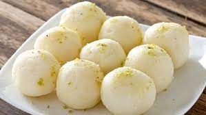
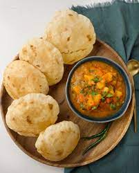
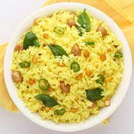
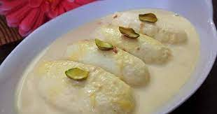
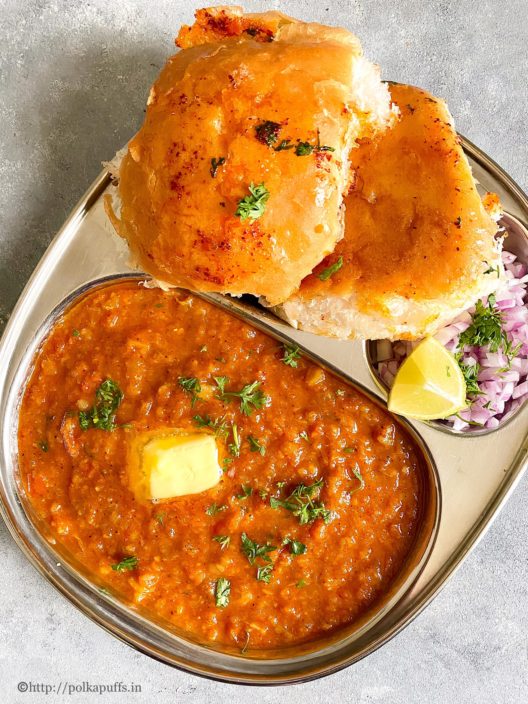
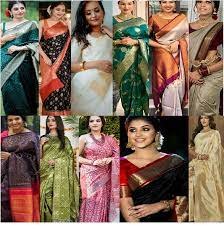
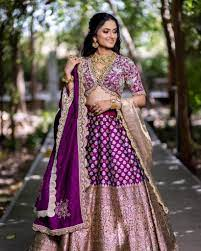
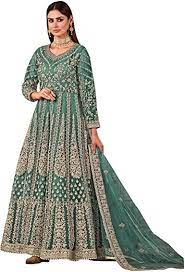
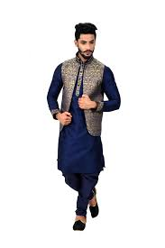

India Major Ethnic Groups
Indo-Aryans
The Indo-Aryan people are part of the various Indo-European ethnolinguistic groups who speak one of the many Indo-Aryan languages.
It is estimated that the Indo-Aryans first migrated to the Indian Subcontinent of South Asia around 1800 BCE. Indo-Aryans make up the
majority of the Indian population and are mostly located in north and central India.
The Indo-Aryans are the most diverse group of people in India, being made up of Assamese, Bengali, Gujarati, Hindi, Kashmiri, Konkani,
Marathi and Punjabi. The Indo-Aryans dominated all of India, outside of South India where most Indians are of Dravidian origin.
Many of India's great dynasties and empires came from the Indo-Aryan peoples of India, like the Maurya Empire (322-185 BC),
the Gupta Empire (320-558), the Karkota Empire (625-885), the Pala Empire (700-1100), the Maratha Empire (1674-1818),
and the Mughal Empire (1526-1857), just to name the major ones. Each of the Indo-Aryan ethnic groups has their own language or languages.
Dravidians
The Dravidian people are any native speakers of the Dravidian languages in the Indian Subcontinent of South Asia. Almost all the Dravidians of India
live in the south of India. The five major ethnic groups of Dravidian people in India are Kannadiga, Malayali, Tulu, Tamil, and Telugu.
The ancient Indus Valley civilization in India was believed to have been of Dravidian origin in northern India, but then the Dravidian people were
pushed south when the Indo-Aryans came in and the Kuru Kingdom in northern Indian arose. Later south India was dominated by the three Dravidian
kingdoms of the Cheras, Cholas, and the Pandyas. These three kingdoms have been shown to sponsor the growth of literature, music, the arts and
to have done extensive trading. The three kingdoms also supported and were tolerant of Buddhism, Jainism, and Hinduism, which is part of the
reason why the Dravidian people have a diverse religious following. The Chera kingdom fell to the Rashtrakuta Dynasty over time, and then
eventually the Vijayanagara Empire dominated all of south India. Eventually, after a few centuries in power, the Vijayanagara Empire
collapsed in 1646 due to rebellions and pressure from the Muslim north. South India then split up into smaller states that were then
slowly taken over by colonists from Europe. The major languages spoken by the Dravidian people are Brahui, Kannada, Malayalam, Tamil, and Telugu.
Mongoloid And Other Minority Groups
The Brachycephalic peoples were the first to arrive in India, having traveled all the way from Africa. In modern mainland India, only small groups of
the Brachycephalic peoples, like the Irulas, Kodars, Paniyans, and Kurumbas, live in small areas in southern India in hill tribes.
They are mostly found in the Indian territories of the Andaman and Nicobar Islands. The next group of people to arrive in India were the were
the Austrics, who were the group that paved the way for the modern foundation for Indian civilization. They were the first in India to have cultivated
vegetables and rice, as well as made sugar. There are very few Austrics found in India now, but their languages still live on in Eastern and Central India.
The Mongoloids are found in the various states in the northeastern part of India, as well as in the northern areas in the states of Ladakh, parts of West Bengal, and Sikkim.
The last minority group in India are the Western Brachycephals who mostly live in the western part of India is areas like Kashmir, Gujarat, Tamil Nadu and Maharashtra.
India Foods
1.Rasgulla
Rasgulla is a traditional sweet that is usually served at the end of a meal, like many other Indian milk-based desserts.
It is prepared from chhena paneer dumplings and semolina dough, cooked together in a sugary syrup. The origin of rasgulla is the subject of a
heated debate, with West Bengal and Odisha both claiming to be the birthplace of the dessert.
Bengalis claim that rasgulla was the byproduct of many culinary experiments in the state, while the people of Odisha claim that it
was traditionally offered to Lord Jagannath for centuries. However, most food historians agree that the truth is somewhere in between.



2.Puri
Puri is an unleavened, fried Indian bread made with water, finer or coarser wheat flour, and occasionally cumin seeds. The dough is rolled into flat round shapes and fried in
copious amounts of vegetable oil or ghee. During frying, the dough absorbs oil and puri acquires the typical puffy appearance, crispy texture, and an appealing golden color.
Occasionally, uncooked puri is punctured to produce a flat variety of the bread. It is consumed across the Indian subcontinent, but its origin is probably in the
northern regions, where wheat flour was more usually employed. Most commonly, puri is consumed as a side dish, alongside creamy and spicy curries or a variety of vegetable dishes.



3.Pulihora
Pulihora is a popular south Indian dish that can easily be found in the states of Andhra Pradesh, Tamil Nadu, and Karnataka. It consists of rice, turmeric, tamarind,
curry leaves, coriander, ginger, and green chiles. Additionally, yellow lentils, roasted sesame seed powder, and mustard seeds can be added to enhance the already rich flavors of the dish.
It is commonly prepared for festivals, yellow in color due to turmeric - considered sacred and symbolizing festive occasions in the Hindu world.
The word puli in its name means sour, reflecting the tangy flavor of the dish. However, spicy and salty flavors that are also present in the dish
are well balanced with the sour tamarind.



4.Malai
The thick, mild malai is a homemade dairy product made with heated milk which is refrigerated until a thick layer of fat is created on top. Yellow in color,
malai is usually skimmed off by hands, stored in containers, and the procedure is repeated until all fat and proteins have been separated from the milk.
Even though it is a time-consuming process, malai is commonly prepared in many Indian households, and usually used as an ingredient in creamy sauces, curries,
and traditional desserts.



5.Pav bhaji
Pav bhaji is a popular street snack originating from the Indian state of Maharashtra. It consists of a vegetable curry that is typically served with a soft bread roll known as pav.
The dish was invented in the 1850s as a midnight meal by street vendors who prepared it with all the leftover vegetables from the day, which were then mashed and combined with spices and ghee butter.
Originally, it was a quick and easy meal for Mumbai's textile mill workers, but today it is a favorite street snack that is also served in some restaurants in Mumbai.
There are a lot of varieties of the basic pav bhaji, with added cheese, paneer, mushrooms, plantains, and even dried fruits thrown in the flavorful curry mix.



India dressings
1.Saree/Sari
The Saree/Sari is the most traditional Indian dress and is thought to have originated as early as 2800 BC in the Indus Valley. In Sanskrit, it translates to
“strip of fabric” which makes sense when you consider that most Saree's are between 6-8 yard of fabric! The Saree is a timeless outfit that never goes out of style.
It is wrapped, pleated, and draped across the shoulder with excess fabric hanging behind. Depending on how it is styled, a Saree can be draped to cover the entire body
or to show more skin. The timeless elegance of the Saree makes it perfect for any event. The Saree consists of 3 parts:
i A petticoat worn underneath (which we provide!)
ii A cropped blouse
iii 6-8 yards of fabric wrapped around the petticoat to form a skirt (we send yours pre-pleated! Trust me, even watching a few YouTube videos of
“how to pre-pleat a saree” will make you appreciate a pre-pleated one!)



2.Lehenga/Lengha
The lehenga/Lengha is the original crop top and skirt set. It is also made up of 3 parts:
i A cropped top known as a Choli (Are tops are all adjustable!)
ii A skirt known as the Lehenga (again, very adjustable!)
iii A long scarf known as the Dupatta
The lehenga is one of the easiest outfits to dance in and acceptable at almost all types of events. It is also one of the most versatile outfit types as the Lehenga
bottom can be paired with a cape style top, long jacket style top, and various other styles. Some modern styles even include a side-slit in the Lehenga skirt.
Whether you choose to wear your Lehenga at an engagement, sangeet, or reception, the elegant draping and stunning embroidery are sure to turn heads!



3.Anarkali
Legend has it that the Anarkali was named after a courtesan of Great Emperor Akbar’s court from the Mughal Era. Think of the type of flowy midi dresses you
wear in the summer when thinking of an Anarkali. An Anarkali consists of 3 parts:
i A long flowing top known as the Kurta
ii Leggings or pants known as the Churidaar
iii A long scarf known as the Dupatta
The Anarkali is a versatile outfit that can be worn to any event. It is the perfect choice if you are unsure of what to wear. And because the Kurta top is often
cut in an A-line shape, the Anarkali is one of the most flattering dress type



4.Sharara Suit
Think 70s disco pants when thinking of a Sharara. It is a 3-piece outfit that can be identified by its unique wide leg flowy pants. Some styles of sharara are
looser while others are tighter at the thighs and flare out starting above the kneecap. The Sharara Suit is fun and playful and the perfect outfit for a mehndi or sangeet.
It can also be worn for the wedding ceremony. The Sharara Suit consists of the following:
i Wide leg pants
ii A blouse that can vary in length
iii A long scarf known as a Dupatta or a longline vest


5.Kurtas
A Kurta is a collarless shirt made of rectangular pieces that are stitched together with seams along the side of the shirt. The side-seams are left open at the bottom up to
varying lengths to allow for easier movement. A Kurta is effortless yet sophisticated, making it perfect for all occasions. Keep in mind that you should not choose the
color black for your Kurta if you plan to wear it for the wedding ceremony. Black at all other occasions looks polished and is highly recommended. Since it is less formal
than a Sherwani, a Kurta is our go-to option for menswear.



India Greetings
Ways of Greeting in India
1. Namaste
Chances are that you already know this popular greeting. Namaste is a very respectful way of saying ‘hello.’ Pair it with a folded hand gesture and a gentle bow of your
head and neck, and locals will be quite pleased with your manners. Namaskar (nah-mas-kar) and pranam (prah-naam) are also popular greetings which mean the same
and can be interchangeably used with namaste.
2. Please
While ‘please’ works in most parts of the country, and is more naturally used than its Hindi counterpart – kripaya (kruh-pah-yaa) – it is still an important word to know,
especially if you are traveling deep within rural India. Add it to the beginning or end of your sentences to sound polite and respectful.
3. Thank You
Quite similar to the use of ‘please,’ ‘thank you’ is also commonly used around the country – particularly in the south where Hindi isn’t spoken as much. However,
dhanyavad (dhuhn-yuh-vaadh) which means ‘thanks’ is a good word to know. Just as with the use of other common English words, you may be considered more respectful
if you use the Hindi equivalent. The Urdu word (though interchangeably used with Hindi) shukriya is also an alternative to ‘thank you’ that you can use around the country.
4. How Are You?
If you find yourself wanting to chat more with the locals, the Hindi equivalent of ‘How are you?’ – ‘Aap (you) kaise (how) hain (are)?‘ – is a good way to go.
If you are asked the same question, you can respond with ‘Main theek hun’ which translates to ‘I am fine.’
5. Nice To Meet You!
The Hindi equivalent of ‘Nice to meet you’ – ‘Aap (you) se milkar (meet) khushi (happiness) huin’ – is an excellent way to end appropriate conversations.
If you have met someone who has truly been helpful and you want to stress how happy you are that you’ve met them, add the hindi equivalent of very – bahuth –
to the sentence thus making it ‘Aap se milkar bahuth khushi huin.’